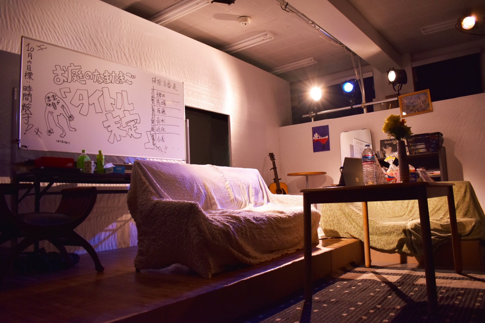
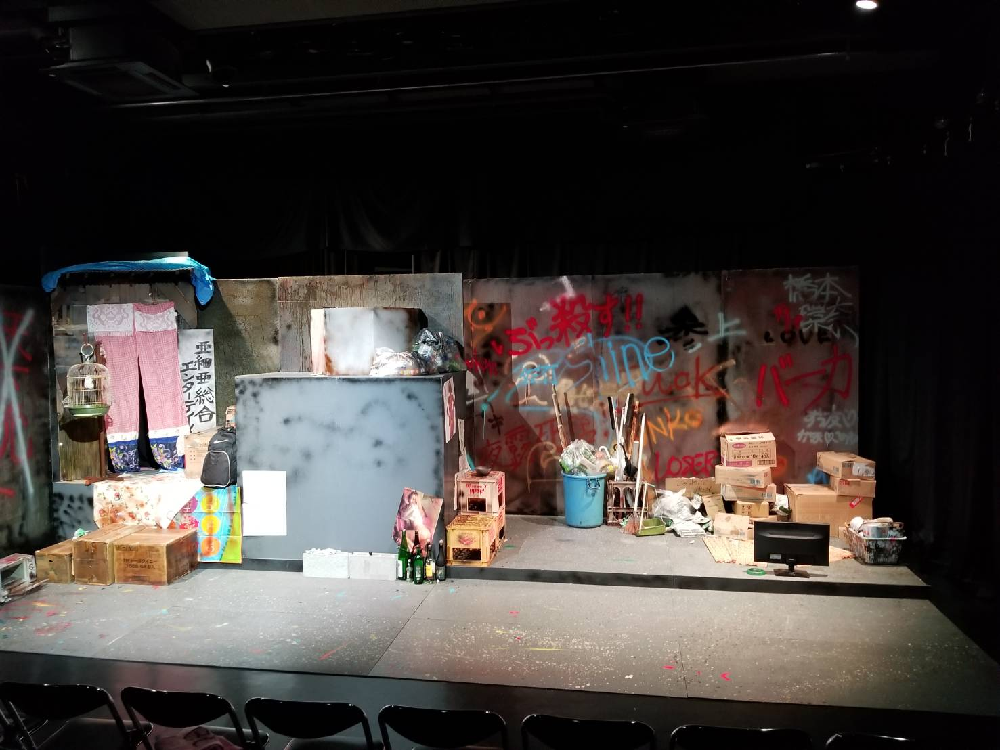
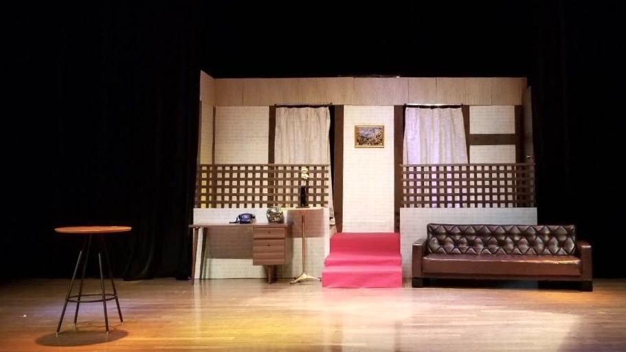
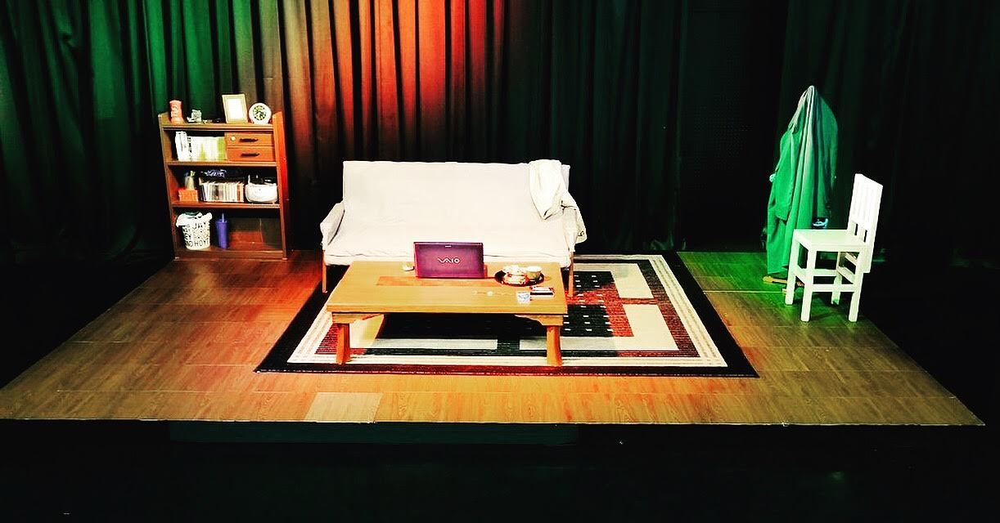
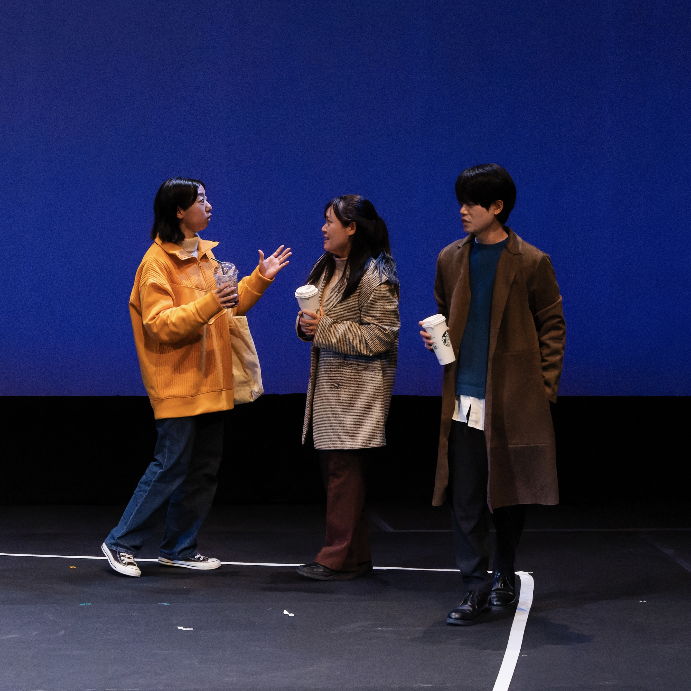
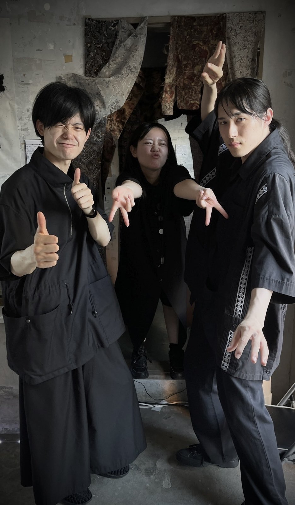
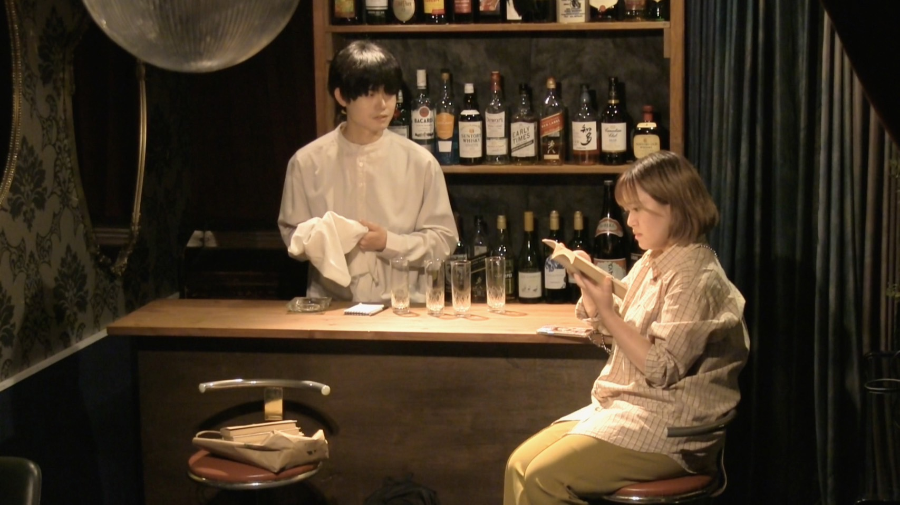
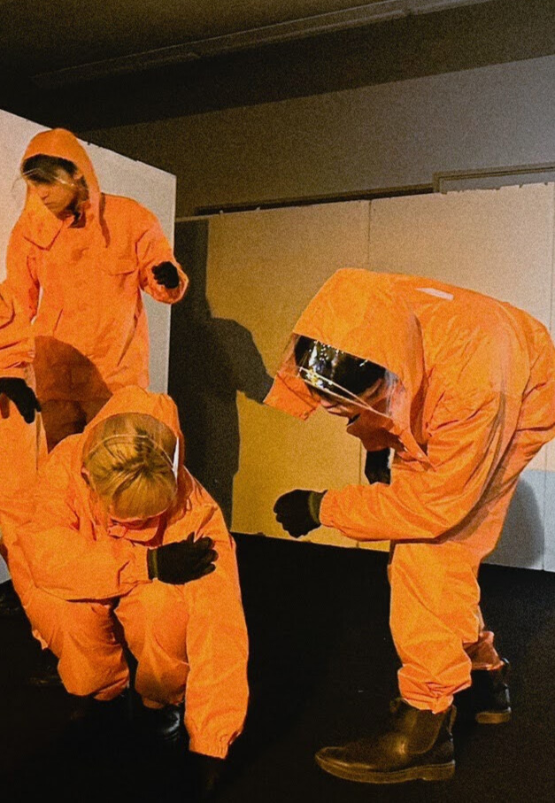
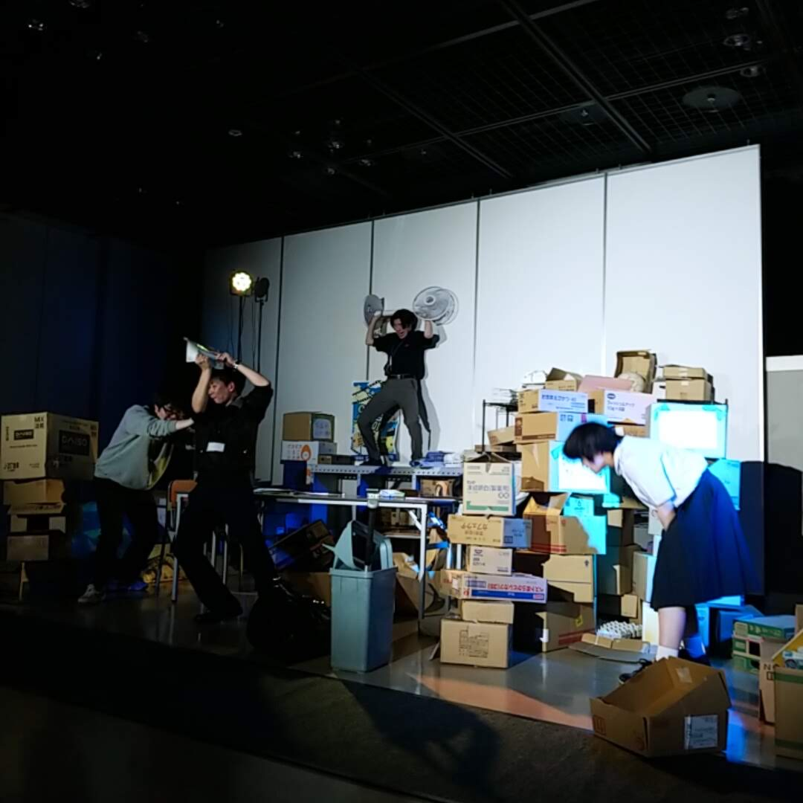
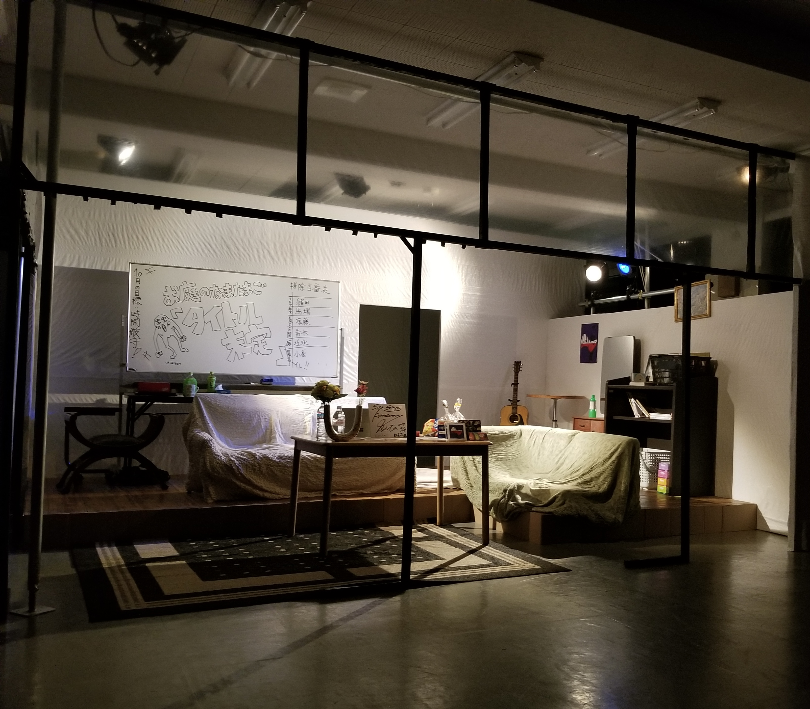

MANAGER
舞台監督
ガガ 大ガガ＃３「ゾンビ（ともだち）」
早稲田小劇場どらま館 2025年8月22日(金)～8月25日(月)
ナキワスレ第二回本公演「どうか孤独を愛してくれ」
下北沢OFF・OFFシアター 2025年8月15日(金)～8月17日(日)
ほぼジャムパン。第二回公演「あたし、はじめまして」
あさくさ劇亭 2025年3月25日～27日
CREW
演出部
SET
美術

タイトル未定
お庭のなまたまご第一回公演 2020年10月 広島市青少年センター

このくらいのLANGIT
卒業公演 2019年12月 広島市東区民文化センター

もっと言うと探偵
演劇サークル春公演 2019年3月 大学講堂

あの日助手席に彼女を乗せて僕は湖へ向かった
演劇サークル引退公演 2018年11月 広島市東区民文化センター
PROPS
小道具
ガガ 小ガガ#5「理由（まぶしい）」
カフェムリウイ
DIRECTION
作・演出

生きてけるといえど、スクエアな世界で
お庭のなまたまご 第10回中国ブロック劇王決定戦出場作品

Voodoo
お庭のなまたまご 演劇企画公演vol.1

悟空にも守りたいものがあるように私たちにもあるいつかいくつかの
お庭のなまたまご ヲルガン座寄席

火星の植物
お庭のなまたまご 広島市青少年センターヤングフェスタ参加作品
お庭のなまたまご第三回本公演「ぼくなりのオ・ド・ショース」
安芸区民文化センター

お庭のなまたまご第二回本公演「戻りたいな、エントロピー」
広島市青少年センター 2021年

お庭のなまたまご第一回公演「タイトル未定」
広島市青少年センター 2020年